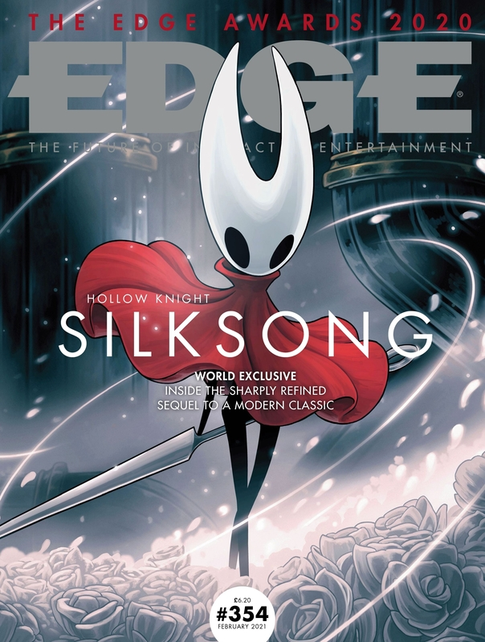

续作 —— 丝之歌

《空洞骑士：丝之歌》（Hollow Knight: Silksong）是 2017 年神作《空洞骑士》的正统续作。玩家将扮演圣巢守护者黄蜂女（Hornet），在全新的丝与歌之国度中展开冒险，探索全新剧情、探索全新地图区域，掌握全新技能与敏捷移动招式。
游戏预计登陆 PC、Nintendo Switch、PlayStation 5、PlayStation 4 以及 Xbox 平台，并首发加入 Xbox Game Pass。
据开发团队 Team Cherry 透露，续作规模宏大，拥有多达 165+ 种全新的特色敌人以及极具挑战性的 Boss 战体系。
Play as Hornet, princess-protector of Hallownest, and adventure through a whole new kingdom ruled by silk and song! Captured and brought to this unfamiliar world, Hornet must battle foes and solve mysteries as she ascends on a deadly pilgrimage to the kingdom’s peak.